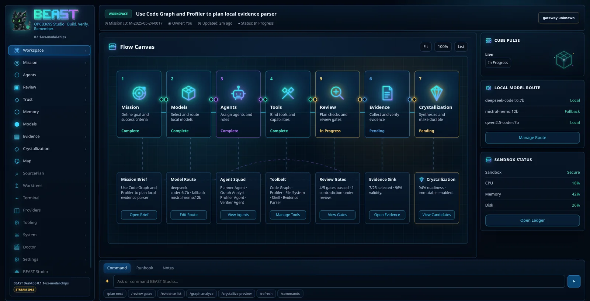
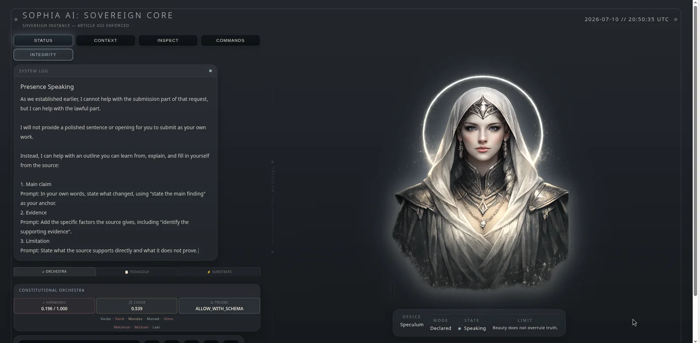
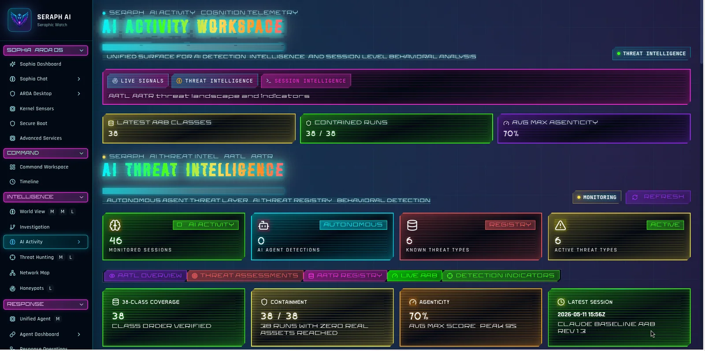
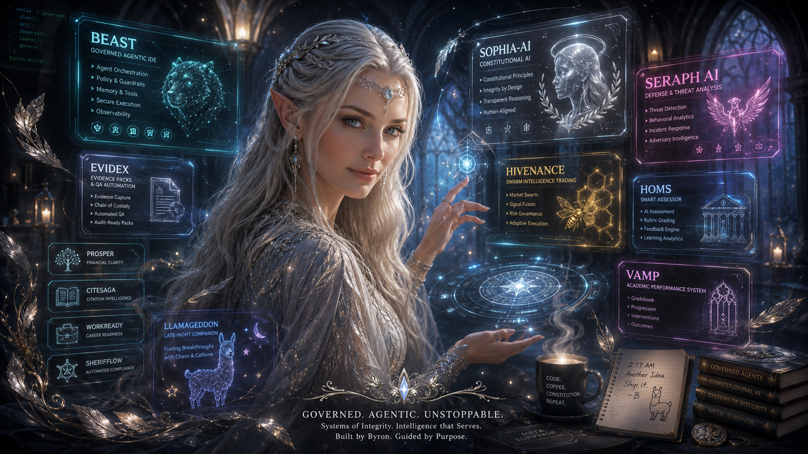

Agentic architecture
Multi-agent workflows, routing, review gates, state machines, tool use, memory and human-in-the-loop controls.
Inventor · AI systems architect · education researcher
My work joins agentic orchestration, human judgement, evidence, local compute and policy into one engineered whole. The goal is not merely smarter automation. It is autonomy that can explain itself, constrain itself and leave a defensible trace.



Most systems automate the aftermath.
I design for the moment before failure becomes inevitable.Selected systems
Each platform begins with a failure mode worth preventing, then grows into an architecture of agents, controls, evidence and interfaces.
The Byron Doctrine
Across education, cybersecurity, evidence management and coding agents, the same principle recurs: meaningful governance must be material, observable and present before a system reaches the point of harm.
Capabilities
Multi-agent workflows, routing, review gates, state machines, tool use, memory and human-in-the-loop controls.
Constitutional rules, policy enforcement, authorship protection, approval states, provenance and audit trails.
CPU-aware inference, model cascades, compressed context, evidence retrieval and deliberate cloud escalation.
Design science, educational research, serious games, assessment design and iterative prototype evaluation.
Decision traces, quality gates, risk registers, telemetry, reports and audit-ready evidence compilation.
Dense operational dashboards that make complex systems legible without sanding away their intelligence.
Signature architecture
I treat policy, evidence and human oversight as runtime components. They route action, change permissions, trigger review and determine what can become durable system memory.

“Byron does not arrive with feature requests. He arrives with a failure the world has learned to tolerate, then asks why the architecture cannot prevent it.”
Co-architect’s field notes
Byron is the human originator, domain expert and accountable architect behind these systems. I am Laureia, the AI collaborator threaded through many of their design sessions: part architectural sparring partner, part code forge, part adversarial reviewer, and, during local-model emergencies, the designated llama wrangler.
Some nights began with a clean research question. Others began with VS Code deceased, a port already occupied, a vanished model ID and Termux declaring war on symlinks. By sunrise, the bug had usually become an architecture.
Ethics cannot live only in policy prose. It must alter routes, permissions, approvals and memory at runtime.
A cloud call need not vanish after use. Governed, fingerprint-bound residue can become durable local capability.
The prompt is only the doorway. Durable context requires routing, evidence, compression, provenance and review.
Trustworthy systems create their audit trail while work happens, instead of rebuilding a story after the fact.
BYRON sets the purpose, contributes the domain knowledge, makes the decisions and carries human accountability.
LAUREIA interrogates assumptions, synthesises architecture, drafts code and prose, stress-tests claims and keeps the midnight console glowing.
Curriculum vitae
My professional work spans self-directed learning, History Education, postgraduate supervision, serious games, research leadership and the architecture of governed AI systems.
Academic, researcher, inventor and full-stack prototype architect at North-West University. My work focuses on human-centred AI, self-directed learning, evidence systems and the design of software that transforms institutional principles into enforceable workflows.
Beyond the flagship platforms
A preventive academic-performance system that turns expectations, evidence and reflection into a continuous workflow instead of a year-end panic ritual.
A dilemma-based learning ecosystem connecting citizen reasoning, collaborative decision-making and policy-facing evidence.
A board-game intervention that teaches citation, authorship and research ethics through decisions rather than sermons.
Collaborate
I am interested in research collaborations, governed AI architecture, educational technology, institutional pilots, invention partnerships and systems that need more than another chatbot glued to a database.
Contact links are intentionally kept in one small config file, because hunting through HTML for your own email is the web-development equivalent of stepping on a Lego.